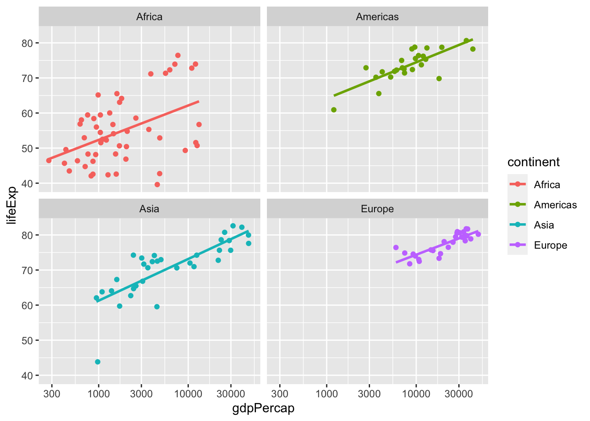

1 Visualization
Everyone loves visualizations.
Once you have read this chapter, and completed the associated tutorials, you will be able to create graphics like this one with your data. Join us on the journey.
1.1 Basic R commands
We use the terms “coding” and “programming” interchangeably. With the rest of this Primer, we will use a different font to distinguish regular text from computer_code. If you’d like to follow along with this section, you can open open the Console pane in RStudio.
Running code: the act of telling R to put our code into action.
Objects: where values are stored in R. You can assign values to objects and display the contents of objects. Use the assignment operator
<-to do so. You can choose almost any name you like for an object, as long as the name does not begin with a number or a special character like+,*,-,/,^, etc.
For example we can save the result of 4 + 3 to an object named x.
x <- 4 + 3Now, whenever we type x, the value of 4 + 3 will appear:
x## [1] 7-
Data types: integers, doubles/numerics, logicals, and characters.
- Integers are values like -1, 0, 2, 4092.
- Doubles or numerics are a larger set of values containing both the integers but also fractions and decimal values like -24.932 and 0.8.
- Logicals are either
TRUEorFALSE. Characters are text like “cabbage,” “Hamilton,” or “The Wire is the greatest TV show ever.” - Characters are often denoted with the quotation marks around them.
-
Vectors: a collection of values. These are created using the
c()function, where thecstands for combine.
For example, c(2, 4, 6, 8) creates a four element vector of numeric values.
c(1, 2, 3, 4)## [1] 1 2 3 4- Factors: used to represent “categorical data.” We will go into detail about these and other variable types in Chapter 2.
- Data frames: rectangular arrangements of data. Think of a spreadsheet. Rows correspond to units. Columns correspond to variables. Modern data frames are called tibbles.
Boolean algebra:
TRUE/FALSEstatements and mathematical operators such as<(less than),<=(less than or equal to), and!=(not equal to). For example,4 + 2 >= 3will returnTRUE, but3 + 5 <= 1will returnFALSE.Inclusion: Tested for with the
%in%operator. For example,"B" %in% c("A", "B")returnsTRUEwhile"C" %in% c("A", "B")returnsFALSE.Equality: Tested for using
==. For example,2 + 1 == 3compares2 + 1to3and is legal R code, returningTRUE. On the other hand,2 + 1 = 3will return an error because we can not assign one number to another.Logical operators:
&representing “and” as well as|representing “or.” For example,(2 + 1 == 3) & (2 + 1 == 4)returnsFALSEsince at least one of the two parts is notTRUE. On the other hand,(2 + 1 == 3) | (2 + 1 == 4)returnsTRUEsince at least one of the two parts isTRUE.Functions: perform tasks, and are also called commands. They take in inputs called arguments and return outputs. You can either manually specify a function’s arguments or use the function’s default values.
For example, sqrt(64) is the function sqrt() with 64 as its argument.
sqrt(64)## [1] 8Help files: provide documentation for functions and datasets. You can bring up help files by adding a
?before the name of the object then run this in the console.Code comments: are text placed after a
#symbol. Nothing will be run after a#symbol, which is useful when you include comments in your code, as you always should.Errors, warnings, and messages: generally reported in a red font. When there is an error, the code will not run. Read (and/or google) the message and try fix it. Warnings don’t prevent code from completing. For example, if you create a scatterplot based on data with two missing values, you will see this warning:
Warning message:
Removed 2 rows containing missing values (geom_point). Messages are similar. In both cases, you should fix the underlying issue until the warning/message goes away.
1.2 Looking at data
This chapter focuses on ggplot2, one of the core packages in the tidyverse. The tidyverse is a package that contains 8 individual packages, most importantly ggplot2, but also other packages that help us view data within R. To access the datasets, help pages, and functions that we will use in this chapter, load the tidyverse:
That one line of code loads all the packages associated with the tidyverse, packages which you will use in almost every data analysis. The first time you load the tidyverse, R will report which functions from the tidyverse conflict with functions in base R or with other packages you may have loaded. (We hide these and other messages in this book because they are ugly.)
You might get this error message:
Error in library(tidyverse) : there is no package called ‘tidyverse’If that happens, you need to install the package:
install.packages("tidyverse")Then, run library(tidyverse) once again.
1.2.1 Examining trains
Most data comes to us in “spreadsheet”-type format. These datasets are called data frames or tibbles in R. Let’s explore the trains tibble from the primer.data package. This data comes from Enos (2014), which investigated attitudes toward immigration among Boston commuters.
library(primer.data)
trains## # A tibble: 115 x 14
## treatment att_start att_end gender race liberal party age income line
## <fct> <dbl> <dbl> <chr> <chr> <lgl> <chr> <int> <dbl> <chr>
## 1 Treated 11 11 Female White FALSE Democr… 31 135000 Framin…
## 2 Treated 9 10 Female White FALSE Republ… 34 105000 Framin…
## 3 Treated 3 5 Male White TRUE Democr… 63 135000 Framin…
## 4 Treated 11 11 Male White FALSE Democr… 45 300000 Framin…
## 5 Control 8 5 Male White TRUE Democr… 55 135000 Framin…
## 6 Treated 13 13 Female White FALSE Democr… 37 87500 Framin…
## 7 Control 13 13 Female White FALSE Republ… 53 87500 Framin…
## 8 Treated 10 11 Male White FALSE Democr… 36 135000 Framin…
## 9 Control 12 12 Female White FALSE Democr… 54 105000 Framin…
## 10 Treated 9 10 Male White FALSE Republ… 42 135000 Framin…
## # … with 105 more rows, and 4 more variables: station <chr>, hisp_perc <dbl>,
## # ideology_start <int>, ideology_end <int>Let’s unpack this output:
A
tibbleis a specific kind of data frame. This particular data frame has 115 rows corresponding to different units, meaning people in this case.The tibble also has 14 columns corresponding to variables which describe each unit or observation.
We see, by default, the top 10 rows and some of the columns. You can see more (or fewer) rows and columns by using the
print()command:
print(trains, n = 15, width = 100)## # A tibble: 115 x 14
## treatment att_start att_end gender race liberal party age income
## <fct> <dbl> <dbl> <chr> <chr> <lgl> <chr> <int> <dbl>
## 1 Treated 11 11 Female White FALSE Democrat 31 135000
## 2 Treated 9 10 Female White FALSE Republican 34 105000
## 3 Treated 3 5 Male White TRUE Democrat 63 135000
## 4 Treated 11 11 Male White FALSE Democrat 45 300000
## 5 Control 8 5 Male White TRUE Democrat 55 135000
## 6 Treated 13 13 Female White FALSE Democrat 37 87500
## 7 Control 13 13 Female White FALSE Republican 53 87500
## 8 Treated 10 11 Male White FALSE Democrat 36 135000
## 9 Control 12 12 Female White FALSE Democrat 54 105000
## 10 Treated 9 10 Male White FALSE Republican 42 135000
## 11 Control 10 9 Female White FALSE Democrat 33 105000
## 12 Treated 11 9 Male White FALSE Democrat 50 250000
## 13 Treated 13 13 Male White FALSE Republican 24 105000
## 14 Control 6 7 Male White TRUE Democrat 40 62500
## 15 Control 8 8 Male White TRUE Democrat 53 300000
## line station hisp_perc ideology_start ideology_end
## <chr> <chr> <dbl> <int> <int>
## 1 Framingham Grafton 0.0264 3 3
## 2 Framingham Southborough 0.0154 4 4
## 3 Framingham Grafton 0.0191 1 2
## 4 Framingham Grafton 0.0191 4 4
## 5 Framingham Grafton 0.0191 2 2
## 6 Framingham Grafton 0.0231 5 5
## 7 Framingham Grafton 0.0304 5 5
## 8 Framingham Grafton 0.0247 4 4
## 9 Framingham Grafton 0.0247 4 3
## 10 Framingham Grafton 0.0259 4 4
## 11 Framingham Grafton 0.0259 3 3
## 12 Framingham Grafton 0.0259 5 4
## 13 Framingham Grafton 0.0159 4 4
## 14 Framingham Grafton 0.0159 1 1
## 15 Framingham Southborough 0.0392 2 2
## # … with 100 more rowsThe n argument to print() tells R the number of rows you want to see. width refers to the number of characters to print across the screen. Want to see every row and every column? Try:
print(trains, n = Inf, width = Inf)Inf is an R object which means “infinity.”
1.2.2 Exploring tibbles
There are many ways to get a feel for the data contained in a tibble like trains.
1.2.2.1 view()
Run view(trains) in the Console in RStudio. Explore this tibble in the resulting pop up viewer.
view() allows us to explore the different variables listed in the columns. Observe that there are many different types of variables. Some of the variables are quantitative. These variables are numerical in nature. Other variables here, including gender and treatment, are categorical. Categorical variables can only take on one of a limited possibility, like educational level can only be one of limited possibilities like high school, elementary school, university, etc.
1.2.2.2 glimpse()
We can also explore a tibble by using glimpse().
glimpse(trains)## Rows: 115
## Columns: 14
## $ treatment <fct> Treated, Treated, Treated, Treated, Control, Treated, C…
## $ att_start <dbl> 11, 9, 3, 11, 8, 13, 13, 10, 12, 9, 10, 11, 13, 6, 8, 1…
## $ att_end <dbl> 11, 10, 5, 11, 5, 13, 13, 11, 12, 10, 9, 9, 13, 7, 8, 1…
## $ gender <chr> "Female", "Female", "Male", "Male", "Male", "Female", "…
## $ race <chr> "White", "White", "White", "White", "White", "White", "…
## $ liberal <lgl> FALSE, FALSE, TRUE, FALSE, TRUE, FALSE, FALSE, FALSE, F…
## $ party <chr> "Democrat", "Republican", "Democrat", "Democrat", "Demo…
## $ age <int> 31, 34, 63, 45, 55, 37, 53, 36, 54, 42, 33, 50, 24, 40,…
## $ income <dbl> 135000, 105000, 135000, 300000, 135000, 87500, 87500, 1…
## $ line <chr> "Framingham", "Framingham", "Framingham", "Framingham",…
## $ station <chr> "Grafton", "Southborough", "Grafton", "Grafton", "Graft…
## $ hisp_perc <dbl> 0.026, 0.015, 0.019, 0.019, 0.019, 0.023, 0.030, 0.025,…
## $ ideology_start <int> 3, 4, 1, 4, 2, 5, 5, 4, 4, 4, 3, 5, 4, 1, 2, 2, 3, 4, 2…
## $ ideology_end <int> 3, 4, 2, 4, 2, 5, 5, 4, 3, 4, 3, 4, 4, 1, 2, 3, 3, 1, 2…We see the first few values for each variable in a row after the variable name. In addition, the data type of the variable is given immediately after each variable’s name, inside < >.
dbl refers to “double,” which is computer terminology for quantitative/numerical variables. int is for “integer.” fct is refers to a “factor,” a variable that is “nominal,” meaning a member of a smallish number of categories. chr is for character data.
1.2.2.3 summary()
Usesummary() to get a sense of the distribution of the variables in the tibble.
summary(trains)## treatment att_start att_end gender
## Treated:51 Min. : 3.0 Min. : 3.0 Length:115
## Control:64 1st Qu.: 7.0 1st Qu.: 7.0 Class :character
## Median : 9.0 Median : 9.0 Mode :character
## Mean : 9.2 Mean : 9.1
## 3rd Qu.:11.0 3rd Qu.:11.0
## Max. :15.0 Max. :15.0
##
## race liberal party age
## Length:115 Mode :logical Length:115 Min. :20
## Class :character FALSE:64 Class :character 1st Qu.:33
## Mode :character TRUE :51 Mode :character Median :43
## Mean :42
## 3rd Qu.:52
## Max. :68
##
## income line station hisp_perc
## Min. : 23500 Length:115 Length:115 Min. :0.01
## 1st Qu.: 87500 Class :character Class :character 1st Qu.:0.02
## Median :135000 Mode :character Mode :character Median :0.03
## Mean :141813 Mean :0.04
## 3rd Qu.:135000 3rd Qu.:0.04
## Max. :300000 Max. :0.26
## NA's :1
## ideology_start ideology_end
## Min. :1.0 Min. :1.0
## 1st Qu.:2.0 1st Qu.:2.0
## Median :3.0 Median :3.0
## Mean :2.8 Mean :2.7
## 3rd Qu.:4.0 3rd Qu.:3.5
## Max. :5.0 Max. :5.0
##
1.2.2.4 $ operator
The $ operator allows us to extract a single variable from a tibble and return it as a vector.
trains$age## [1] 31 34 63 45 55 37 53 36 54 42 33 50 24 40 53 50 33 33 32 57 41 36 43 25 41
## [26] 33 44 46 41 28 36 37 38 48 20 52 38 45 55 38 45 44 36 29 42 43 54 39 31 50
## [51] 60 67 54 44 50 20 57 25 60 44 35 54 52 47 60 47 22 56 50 21 29 45 46 42 23
## [76] 29 60 41 30 61 21 46 53 45 46 63 21 31 35 22 68 27 22 30 59 56 32 35 23 60
## [101] 50 31 43 30 54 52 52 50 37 27 55 42 68 52 501.3 Basic Plots
There are three essential components to a plot:
-
data: the dataset containing the variables of interest. -
geom: the geometric object to display, e.g., scatterplot, line, bar. -
aes: aesthetic attributes of the geometric object. The most important are the names of the variables that should be on the x and y axes. Additional attributes include color and size. Aesthetic attributes are mapped to variables in the dataset.
Consider a basic scatterplot using data from Enos (2014) for 115 Boston commuters.
ggplot(data = trains,
mapping = aes(x = age,
y = income)) +
geom_point()
Notice how data and aes are specified in the call to ggplot(), followed by our choice of geom.
Plots are composed of layers, combined using the + sign. The most essential layer specifies which type of geometric object we want the plot to involve: points, lines, bars, and others. In our graph above, the geom we used is geom_point().
The + sign comes at the end of the code line and not at the beginning. When adding layers to a plot, start a new line after the + so that the code for each layer is on a new line.
1.3.1 geom_point()
Scatterplots, also called bivariate plots, allow you to visualize the relationship between two numerical variables.
Recall our scatterplot from above.
ggplot(data = trains,
mapping = aes(x = age,
y = income)) +
geom_point()
Let’s break down this code, piece-by-piece.
The
dataargument is set totrainsviadata = trains.The
aestheticmappingis set viamapping = aes(x = age, y = income). Here, we mapageto thexaxis andincometo theyaxis.The
geometric object is specified usinggeom_point(), telling R we want a scatterplot. We added a layer using the+sign.
If we do not specify the geometric object, we have a blank plot:
ggplot(data = trains,
mapping = aes(x = age,
y = income))
In addition to mapping variables to the x and y axes, we can also map variables to color.
ggplot(data = trains,
mapping = aes(x = age,
y = income,
color = party)) +
geom_point()
We use the function labs() to add a plot title, axis labels, subtitles, and captions to our graph. By default, R simply uses the names of variables for axes and legends. Add better titles and labels.
ggplot(data = trains,
mapping = aes(x = age,
y = income)) +
geom_point() +
labs(title = "Age and Income Among Boston Commuters",
subtitle = "Older commuters don't seem to make more money",
x = "Age",
y = "Income",
caption = "Data source: Enos (2014)")
Note that like with geoms, we add a layer using + when creating labs()for our plot. In general, every plot should give a title and axes labels. You should also add a subtitle, the purpose of which is to give a short “main point” of the graphic. What do you want the viewer to notice? You should also provide the source for the data, usually via the caption argument.
Let’s now take a tour of some of the more useful geoms.
1.3.2 geom_jitter()
Consider a different scatter plot using the trains data.
ggplot(data = trains,
mapping = aes(x = att_start,
y = att_end)) +
geom_point() +
labs(title = "Immigration Attitudes Among Boston Commuters",
subtitle = "Attitudes did not change much after the experiment",
x = "Attitude Before Experiment",
y = "Attitude After Experiment",
caption = "Data source: Enos (2014)")
The problem with this display is “overplotting.” Because attitudes are measured as integers, we do not know if a given point represents just one person or a dozen. There are two methods we can use to address overplotting: transparency and jitter.
Method 1: Changing the transparency
We can change the transparency/opacity of the points by using the alpha argument within geom_point(). The alpha argument can be set to any value between 0 and 1, where 0 sets the points to be 100% transparent and 1 sets the points to be 100% opaque. By default, alpha is set to 1.
Use a new alpha value to the scatterplot.
ggplot(data = trains,
mapping = aes(x = att_start,
y = att_end)) +
geom_point(alpha = 0.2) +
labs(title = "Immigration Attitudes Among Boston Commuters",
subtitle = "Attitudes did not change much after the experiment",
x = "Attitude Before Experiment",
y = "Attitude After Experiment",
caption = "Data source: Enos (2014)")
Note that there is no aes() surrounding alpha = 0.2. This is because we are not mapping a variable to an aesthetic attribute, but only changing the default setting of alpha.
Method 2: Jittering the points
We can also decide to jitter the points on the plot. We do this by replacing geom_point() with geom_jitter(). Keep in mind that jittering is strictly a visualization tool; even after creating a jittered scatterplot, the original values saved in the data frame remain unchanged.
In order to specify how much jitter to add, we use the width and height arguments to geom_jitter(). This corresponds to how hard you’d like to shake the plot in horizontal x-axis units and vertical y-axis units, respectively. It is important to add just enough jitter to break any overlap in points, but not to the extent where you alter the original pattern in points.
ggplot(data = trains,
mapping = aes(x = att_start,
y = att_end)) +
geom_jitter() +
labs(title = "Immigration Attitudes Among Boston Commuters",
subtitle = "Attitudes did not change much after the experiment",
x = "Attitude Before Experiment",
y = "Attitude After Experiment",
caption = "Data source: Enos (2014)")
When deciding whether to jitter a scatterplot or use the alpha argument to geom_point(), know that there is no single right answer. We suggest you play around with both methods to see which one better emphasizes the point you are trying to make.
1.3.3 geom_line()
Linegraphs show the relationship between two numerical variables when the variable on the x-axis, also called the explanatory, predictive, or independent variable, is of a sequential nature. In other words, there is an inherent ordering to the variable.

The most common examples of linegraphs have some notion of time on the x-axis: hours, days, weeks, years, etc. Since time is sequential, we connect consecutive observations of the variable on the y-axis with a line. Linegraphs that have some notion of time on the x-axis are also called time series plots.
Let’s plot the median duration of unemployment in the United States over the last 50 years.
ggplot(data = economics,
mapping = aes(x = date, y = uempmed)) +
geom_line() +
labs(title = "Unemployment Duration in the United States: 1965 -- 2015",
subtitle = "Dramatic increase in duration after the Great Recesssion",
x = "Date",
y = "Median Duration in Weeks",
caption = "Source: FRED Economic Data")
Almost every aspect of the code used to create this plot is identical to our scatter plots, except for the geom we used.
1.3.4 geom_histogram()
A histogram is a plot that visualizes the distribution of a numerical value.
- We first cut up the x-axis into a series of bins, where each bin represents a range of values.
- For each bin, we count the number of observations that fall in the range corresponding to that bin.
- We draw a bar whose height indicates the corresponding count.
Let’s consider the income variable from the the trains tibble. Pay attention to how we have changed the two arguments to ggplot(). We have removed data = and mapping =. The code still works because R functions allow for passing in arguments by position. The first argument to ggplot() is the data. We don’t need to tell R that trains is the value for data. R assumes that it is because we passed it in as the first argument. Similarly, the second argument to ggplot() is mapping, so R assumes that aes(x = income) is the value we want for mapping because it is the second item passed in.
ggplot(trains,
aes(x = income)) +
geom_histogram()## `stat_bin()` using `bins = 30`. Pick better value with `binwidth`.
Note the message printed above:
stat_bin()usingbins = 30. Pick better value withbinwidth.
You would get the same message if you ran this code yourself. Try it!
The message is telling us that the histogram was constructed using bins = 30 for 30 equally spaced bins. This is the default value. Unless you override this default number of bins with a number you specify, R will choose 30 by default. Because this is an important aspect of making a histogram, R insists on informing you with this message. You make this message go away by specifying the bin number yourself, as you should always do.
Let’s specify bins and also add some labels.
ggplot(trains,
aes(x = income)) +
geom_histogram(bins = 50) +
labs(title = "Income Among Boston Commuter",
subtitle = "Why are there so few people with `middle' incomes?",
x = "Income",
y = "Count",
caption = "Data source: Enos (2014)")
Unlike scatterplots and linegraphs, there is now only one variable being mapped in aes(). Here, that variable is income. The y-aesthetic of a histogram, the count of the observations in each bin, gets computed for you automatically. Furthermore, the geometric object layer is now a geom_histogram().
We can use the fill argument to change the color of the actual bins. Let’s set fill to “steelblue.”
ggplot(trains,
aes(x = income)) +
geom_histogram(bins = 50,
fill = "steelblue") +
labs(title = "Income Among Boston Commuter",
subtitle = "Why are there so few people with `middle' incomes?",
x = "Income",
y = "Count",
caption = "Data source: Enos (2014)")We can also adjust the number of bins in our histogram in one of two ways:
By adjusting the number of bins via the
binsargument togeom_histogram().By adjusting the width of the bins via the
binwidthargument togeom_histogram().
In this data, however, there are not many unique values for income, so neither approach will have much effect. Replace income with age if you want to experiment with these options.
1.3.5 geom_bar()
geom_bar() visualizes the distribution of a categorical variable. This is a simpler task than creating a histogram, as we are simply counting different categories within a categorical variable, also known as the levels of the categorical variable. Often the best way to visualize these different counts, also known as frequencies, is with a barplot.
ggplot(data = trains,
mapping = aes(x = race)) +
geom_bar()1.3.5.1 Two categorical variables
Another use of barplots is to visualize the joint distribution of two categorical variables. (See Chapter 5 for the definition of a joint distribution.) Let’s look at race, as well as treatment, in the trains data by using the fill argument inside the aes() aesthetic mapping. Recall the fill aesthetic corresponds to the color used to fill the bars.
ggplot(trains,
aes(x = race, fill = treatment)) +
geom_bar()This is an example of a stacked barplot. While simple to make, in certain aspects it is not ideal. For example, it is difficult to compare the heights of the different colors between the bars, corresponding to comparing the number of people of different races within each region.
An alternative to stacked barplots are side-by-side barplots, also known as dodged barplots. The code to create a side-by-side barplot includes a position = "dodge" argument added inside geom_bar(). In other words, we are overriding the default barplot type, which is a stacked barplot, and specifying it to be a side-by-side barplot instead.
ggplot(trains,
aes(x = race, fill = treatment)) +
geom_bar(position = "dodge")Whites are over-represented in the Control group even though the treatment was assigned at random.
1.3.6 geom_col()
geom_col() is similar to geom_bar(), except that geom_col() requires you to calculate the number of observations in each category ahead of time. geom_bar() does the calculation for you. See an example below.
trains %>%
group_by(race,treatment) %>%
summarize(count = sum(n())) %>%
ggplot(mapping = aes(x = race,
y = count,
fill = treatment)) +
geom_col(position = "dodge")## `summarise()` has grouped output by 'race'. You can override using the `.groups` argument.You will learn to filter the data later in this chapter. However, what is key here is there was a y-variable supplied in geom_col() but there was not in geom_bar(). geom_col() gives you more control over the data that is being presented compared to geom_bar(), which may come in useful in some circumstances.
1.3.6.1 No pie charts!
One of the most common plots used to visualize the distribution of categorical data is the pie chart. While they may seem harmless enough, pie charts actually present a problem in that humans are unable to judge angles well. Robbins (2013) argues that we overestimate angles greater than 90 degrees and we underestimate angles less than 90 degrees. In other words, it is difficult for us to determine the relative size of one piece of the pie compared to another. Do not use pie charts.
1.3.7 geom_smooth()
We can add trend lines to the plots we create using the geom_smooth() function.
Recall the following scatterplot from our previous work.
ggplot(trains,
aes(x = att_start,
y = att_end)) +
geom_point() +
labs(title = "Immigration Attitudes Among Boston Commuters",
subtitle = "Attitudes did not change much after the experiment",
x = "Attitude Before Experiment",
y = "Attitude After Experiment",
caption = "Data source: Enos (2014)")We can add a trend line to our graph by adding the layer geom_smooth(). Including trend lines allow us to visualize the relationship between att_start and att_end.
ggplot(trains,
aes(x = att_start,
y = att_end)) +
geom_point() +
labs(title = "Immigration Attitudes Among Boston Commuters",
subtitle = "Attitudes did not change much after the experiment",
x = "Attitude Before Experiment",
y = "Attitude After Experiment",
caption = "Data source: Enos (2014)") +
geom_smooth()## `geom_smooth()` using method = 'loess' and formula 'y ~ x'
Note the message. R is telling us that we need to specify the method and formula argument, just the way it told us to provide the bins argument when we used geom_histogram() before.
Let’s add the argument method = "lm", where “lm” stands for linear model. This causes the fitted line to be straight rather than curved. Let’s also add the argument formula = y ~ x. This makes both messages go away. Again, R was not giving us an error before. It was simply telling us what options it was using since we did not specify the options ourselves.
Always include enough detail in your code to make those messages disappear.
ggplot(trains,
aes(x = att_start,
y = att_end)) +
geom_point() +
labs(title = "Immigration Attitudes Among Boston Commuters",
subtitle = "Attitudes did not change much after the experiment",
x = "Attitude Before Experiment",
y = "Attitude After Experiment",
caption = "Data source: Enos (2014)") +
geom_smooth(method = "lm",
formula = y ~ x)Notice the gray section surrounding the line we plotted. This area is called the confidence interval, which is set to 95% by default. We will learn about confidence intervals in Chapter 5. You can make the shaded are disappear by adding se = FALSE as another argument to geom_smooth().
1.3.8 geom_density()
Recall our plot from the geom_histogram() section.
ggplot(trains,
aes(x = income)) +
geom_histogram(bins = 50) +
labs(title = "Income Among Boston Commuter",
subtitle = "Why are there so few people with `middle' incomes?",
x = "Income",
y = "Count",
caption = "Data source: Enos (2014)")Change geom_histogram() to geom_density() to make a density plot, which is a smoothed version of the histogram.
ggplot(trains,
aes(x = income)) +
geom_density() +
labs(title = "Income Among Boston Commuter",
subtitle = "Why are there so few people with `middle' incomes?",
x = "Income",
y = NULL,
caption = "Data source: Enos (2014)")The values on the y-axis are scaled so that the total area under the curve equals one.
1.4 Tidyverse
Going forward, most ggplot() code will omit the data = and mapping = explicit naming of arguments while relying on the default ordering. Most of the time, we include argument names and, as a rule, you should to. But we create so many plots in The Primer that these omissions are unlikely to cause problems.
1.4.1 Data wrangling
We can’t use all the beautiful plots that we learned in the previous chapter until we have “wrangled” the data into a convenient shape. Key wrangling functions include:
filter(): to pick out the rows we want to keep from a tibble.select(): to pick out the columns we want to keep from a tibble.arrange(): to sort the rows in a tibble, in either ascending or descending order.mutate(): to create new columns.group_by(): to assign each row in a tibble to a “group.” This allows statistics to be calculated for each group separately. You will usually usegroup_by()withsummarize().summarize(): to create a new tibble comprised of summary statistics for one (or more) rows for each grouped variable, or for the tibble as a whole if it is ungrouped.
1.4.2 The pipe operator: %>%
The pipe operator (%>%) allows us to combine multiple operations in R into a single sequential chain of actions. Much like how the + sign has to come at the end of the line when constructing plots — because we are building the plot layer-by-layer — the pipe operator %>% has to come at the end of the line because we are building a data wrangling pipeline step-by-step. If you do not include the pipe operator, R assumes the next line of code is unrelated to the layers you built and you will get an error.
1.4.3 filter() rows

FIGURE 1.1: filter() reduces the rows in a tibble.
The filter() function works much like the “Filter” option in Microsoft Excel. It allows you to specify criteria about the values of a variable in your dataset and then selects only the rows that match that criteria.
trains %>%
filter(gender == "Male")## # A tibble: 64 x 14
## treatment att_start att_end gender race liberal party age income line
## <fct> <dbl> <dbl> <chr> <chr> <lgl> <chr> <int> <dbl> <chr>
## 1 Treated 3 5 Male White TRUE Democr… 63 135000 Framin…
## 2 Treated 11 11 Male White FALSE Democr… 45 300000 Framin…
## 3 Control 8 5 Male White TRUE Democr… 55 135000 Framin…
## 4 Treated 10 11 Male White FALSE Democr… 36 135000 Framin…
## 5 Treated 9 10 Male White FALSE Republ… 42 135000 Framin…
## 6 Treated 11 9 Male White FALSE Democr… 50 250000 Framin…
## 7 Treated 13 13 Male White FALSE Republ… 24 105000 Framin…
## 8 Control 6 7 Male White TRUE Democr… 40 62500 Framin…
## 9 Control 8 8 Male White TRUE Democr… 53 300000 Framin…
## 10 Treated 13 13 Male Asian FALSE Republ… 33 250000 Framin…
## # … with 54 more rows, and 4 more variables: station <chr>, hisp_perc <dbl>,
## # ideology_start <int>, ideology_end <int>The result of using filter() will be a tibble with just the rows that you want. When we alter our data, it can be a good idea to save the result in a new data frame by using the <- assignment operator.
trains_men <- trains %>%
filter(gender == "Male")Let’s break down the code. We assigned our new data to an object named trains_men via trains_men <-. Because we assigned this modified data frame to trains_men, it is a separate entity from the initial trains data frame. If, however, we had written the code as trains <- trains we would have overwritten the already-existing tibble.
We start with the trains tibble and then filter() so that only those observations where the gender equals “Male” are included. We test for equality using the double equal sign == and not a single equal sign =. In other words, filter(gender = "Male") will produce an error. This is a convention across many programming languages.
You can use other operators beyond just the == operator.
-
>for “greater than” -
<for “less than” -
>=for “greater than or equal to” -
<=for “less than or equal to” -
!=for “not equal to.” The!indicates “not.”
Furthermore, you can combine multiple criteria using operators that make comparisons:
For example, let’s filter() the trains tibble to include only women who are Republicans and younger than 40.
trains %>%
filter(gender == "Female" &
party == "Republican" &
age < 40)## # A tibble: 3 x 14
## treatment att_start att_end gender race liberal party age income line
## <fct> <dbl> <dbl> <chr> <chr> <lgl> <chr> <int> <dbl> <chr>
## 1 Treated 9 10 Female White FALSE Republi… 34 105000 Framin…
## 2 Control 11 10 Female White FALSE Republi… 21 135000 Frankl…
## 3 Control 15 12 Female White FALSE Republi… 21 250000 Frankl…
## # … with 4 more variables: station <chr>, hisp_perc <dbl>,
## # ideology_start <int>, ideology_end <int>Instead of creating a single criterion with many parts, like with an &, you can just separate the parts with a comma. The resulting tibble is the same.
trains %>%
filter(gender == "Female",
party == "Republican",
age < 40)## # A tibble: 3 x 14
## treatment att_start att_end gender race liberal party age income line
## <fct> <dbl> <dbl> <chr> <chr> <lgl> <chr> <int> <dbl> <chr>
## 1 Treated 9 10 Female White FALSE Republi… 34 105000 Framin…
## 2 Control 11 10 Female White FALSE Republi… 21 135000 Frankl…
## 3 Control 15 12 Female White FALSE Republi… 21 250000 Frankl…
## # … with 4 more variables: station <chr>, hisp_perc <dbl>,
## # ideology_start <int>, ideology_end <int>
1.4.4 select variables

FIGURE 1.2: select() reduces the number of columns in a tibble.
Using the filter() function we were able to pick out specific rows (observations) from the tibble. The select() function allows us to pick specific columns (variables) instead.
Use glimpse() to see the names of the variables in trains:
glimpse(trains)## Rows: 115
## Columns: 14
## $ treatment <fct> Treated, Treated, Treated, Treated, Control, Treated, C…
## $ att_start <dbl> 11, 9, 3, 11, 8, 13, 13, 10, 12, 9, 10, 11, 13, 6, 8, 1…
## $ att_end <dbl> 11, 10, 5, 11, 5, 13, 13, 11, 12, 10, 9, 9, 13, 7, 8, 1…
## $ gender <chr> "Female", "Female", "Male", "Male", "Male", "Female", "…
## $ race <chr> "White", "White", "White", "White", "White", "White", "…
## $ liberal <lgl> FALSE, FALSE, TRUE, FALSE, TRUE, FALSE, FALSE, FALSE, F…
## $ party <chr> "Democrat", "Republican", "Democrat", "Democrat", "Demo…
## $ age <int> 31, 34, 63, 45, 55, 37, 53, 36, 54, 42, 33, 50, 24, 40,…
## $ income <dbl> 135000, 105000, 135000, 300000, 135000, 87500, 87500, 1…
## $ line <chr> "Framingham", "Framingham", "Framingham", "Framingham",…
## $ station <chr> "Grafton", "Southborough", "Grafton", "Grafton", "Graft…
## $ hisp_perc <dbl> 0.026, 0.015, 0.019, 0.019, 0.019, 0.023, 0.030, 0.025,…
## $ ideology_start <int> 3, 4, 1, 4, 2, 5, 5, 4, 4, 4, 3, 5, 4, 1, 2, 2, 3, 4, 2…
## $ ideology_end <int> 3, 4, 2, 4, 2, 5, 5, 4, 3, 4, 3, 4, 4, 1, 2, 3, 3, 1, 2…However, if you only need two of these variables, say gender and treatment. You can select() just these two:
trains %>%
select(gender, treatment)## # A tibble: 115 x 2
## gender treatment
## <chr> <fct>
## 1 Female Treated
## 2 Female Treated
## 3 Male Treated
## 4 Male Treated
## 5 Male Control
## 6 Female Treated
## 7 Female Control
## 8 Male Treated
## 9 Female Control
## 10 Male Treated
## # … with 105 more rowsYou can drop, or “de-select,” certain variables by using the minus (-) sign:
trains %>%
select(-gender, -liberal, -party, -age)## # A tibble: 115 x 10
## treatment att_start att_end race income line station hisp_perc
## <fct> <dbl> <dbl> <chr> <dbl> <chr> <chr> <dbl>
## 1 Treated 11 11 White 135000 Framingham Grafton 0.0264
## 2 Treated 9 10 White 105000 Framingham Southborough 0.0154
## 3 Treated 3 5 White 135000 Framingham Grafton 0.0191
## 4 Treated 11 11 White 300000 Framingham Grafton 0.0191
## 5 Control 8 5 White 135000 Framingham Grafton 0.0191
## 6 Treated 13 13 White 87500 Framingham Grafton 0.0231
## 7 Control 13 13 White 87500 Framingham Grafton 0.0304
## 8 Treated 10 11 White 135000 Framingham Grafton 0.0247
## 9 Control 12 12 White 105000 Framingham Grafton 0.0247
## 10 Treated 9 10 White 135000 Framingham Grafton 0.0259
## # … with 105 more rows, and 2 more variables: ideology_start <int>,
## # ideology_end <int>You can specify a range of columns by using the : operator.
trains %>%
select(gender:age)## # A tibble: 115 x 5
## gender race liberal party age
## <chr> <chr> <lgl> <chr> <int>
## 1 Female White FALSE Democrat 31
## 2 Female White FALSE Republican 34
## 3 Male White TRUE Democrat 63
## 4 Male White FALSE Democrat 45
## 5 Male White TRUE Democrat 55
## 6 Female White FALSE Democrat 37
## 7 Female White FALSE Republican 53
## 8 Male White FALSE Democrat 36
## 9 Female White FALSE Democrat 54
## 10 Male White FALSE Republican 42
## # … with 105 more rowsThis will select() all columns between the two specified variables.
The select() function can also be used to rearrange columns when used with the everything() helper function. We can put the treatment and gender variables first with:
trains %>%
select(treatment, gender, everything())## # A tibble: 115 x 14
## treatment gender att_start att_end race liberal party age income line
## <fct> <chr> <dbl> <dbl> <chr> <lgl> <chr> <int> <dbl> <chr>
## 1 Treated Female 11 11 White FALSE Democr… 31 135000 Framin…
## 2 Treated Female 9 10 White FALSE Republ… 34 105000 Framin…
## 3 Treated Male 3 5 White TRUE Democr… 63 135000 Framin…
## 4 Treated Male 11 11 White FALSE Democr… 45 300000 Framin…
## 5 Control Male 8 5 White TRUE Democr… 55 135000 Framin…
## 6 Treated Female 13 13 White FALSE Democr… 37 87500 Framin…
## 7 Control Female 13 13 White FALSE Republ… 53 87500 Framin…
## 8 Treated Male 10 11 White FALSE Democr… 36 135000 Framin…
## 9 Control Female 12 12 White FALSE Democr… 54 105000 Framin…
## 10 Treated Male 9 10 White FALSE Republ… 42 135000 Framin…
## # … with 105 more rows, and 4 more variables: station <chr>, hisp_perc <dbl>,
## # ideology_start <int>, ideology_end <int>The helper functions starts_with(), ends_with(), and contains() can be used to select variables/columns that match those conditions. Examples:
trains %>%
select(starts_with("a"))## # A tibble: 115 x 3
## att_start att_end age
## <dbl> <dbl> <int>
## 1 11 11 31
## 2 9 10 34
## 3 3 5 63
## 4 11 11 45
## 5 8 5 55
## 6 13 13 37
## 7 13 13 53
## 8 10 11 36
## 9 12 12 54
## 10 9 10 42
## # … with 105 more rows
1.4.5 slice() and pull() and []
slice() and pull() are additional functions that you can use to pick out specific rows or columns within a data frame.
Using slice() gives us specific rows from the trains tibble:
trains %>%
slice(2:5)## # A tibble: 4 x 14
## treatment att_start att_end gender race liberal party age income line
## <fct> <dbl> <dbl> <chr> <chr> <lgl> <chr> <int> <dbl> <chr>
## 1 Treated 9 10 Female White FALSE Republi… 34 105000 Framin…
## 2 Treated 3 5 Male White TRUE Democrat 63 135000 Framin…
## 3 Treated 11 11 Male White FALSE Democrat 45 300000 Framin…
## 4 Control 8 5 Male White TRUE Democrat 55 135000 Framin…
## # … with 4 more variables: station <chr>, hisp_perc <dbl>,
## # ideology_start <int>, ideology_end <int>Unlike filter(), slice() relies on numeric order of the data.
pull() grabs out a variable as a vector, rather than leaving it within a tibble, as select() does:
trains %>%
slice(2:5) %>%
pull(age)## [1] 34 63 45 55
1.4.6 arrange()
arrange() allows us to sort/reorder a tibble’s rows according to the values of a specific variable. Unlike filter() or select(), arrange() does not remove any rows or columns from the tibble. Example:
trains %>%
select(treatment, gender, age) %>%
arrange(age)## # A tibble: 115 x 3
## treatment gender age
## <fct> <chr> <int>
## 1 Treated Female 20
## 2 Control Male 20
## 3 Control Male 21
## 4 Control Female 21
## 5 Control Female 21
## 6 Control Male 22
## 7 Control Female 22
## 8 Treated Male 22
## 9 Treated Male 23
## 10 Control Male 23
## # … with 105 more rowsarrange() always returns rows sorted in ascending order by default. To switch the ordering to descending order instead, use the desc() function:
trains %>%
select(treatment, gender, age) %>%
arrange(desc(age))## # A tibble: 115 x 3
## treatment gender age
## <fct> <chr> <int>
## 1 Control Female 68
## 2 Control Male 68
## 3 Control Male 67
## 4 Treated Male 63
## 5 Control Male 63
## 6 Control Male 61
## 7 Control Female 60
## 8 Treated Male 60
## 9 Control Male 60
## 10 Control Female 60
## # … with 105 more rowsThis is the first of many “pipes” which we will create in The Primer. First, we have the trains tibble. Second, we pipe that to the select() function. Third, we pipe the results of select() to the arrange() function. Each step in the pipe starts with a tibble and then, once it is done, produces a tibble. It is tibbles all the way down!
1.4.7 mutate()

FIGURE 1.3: `mutate() adds a column to a tibble.
mutate() takes existing columns and creates a new column. Recall that the income variable in the trains tibble is in dollars. Let’s use mutate() to create a new variable which is income in thousands of dollars. (We use select() at the start of the pipe so that it is easier to see the new and old variables at the same time.)
trains %>%
select(gender, income) %>%
mutate(income_in_thousands = income / 1000)## # A tibble: 115 x 3
## gender income income_in_thousands
## <chr> <dbl> <dbl>
## 1 Female 135000 135
## 2 Female 105000 105
## 3 Male 135000 135
## 4 Male 300000 300
## 5 Male 135000 135
## 6 Female 87500 87.5
## 7 Female 87500 87.5
## 8 Male 135000 135
## 9 Female 105000 105
## 10 Male 135000 135
## # … with 105 more rowsNotice that we have a newly created column at the right-hand side of our tibble named income_in_thousands.
When creating new variables we can also overwrite the original tibble:
trains <- trains %>%
mutate(income_in_thousands = (income) / 1000)Whenever we create a new tibble, or a new variable within a tibble, we face a dilemma: Should we overwrite the existing tibble/variable or create a new one? There is no right answer.
For example, instead of overwriting trains in the code above, we could have created a new tibble trains_new. Similarly, instead of creating a new variable, income_in_thousands, we could have overwritten the current value of income. Use your best judgment and be careful.
1.4.7.1 if_else()
if_else() is often used within calls to mutate(). It has three arguments. The first argument test should be a logical vector. The result will contain the value of the second argument, yes, when test is TRUE, and the value of the third argument, no, when it is FALSE.
Imagine that we want to create a new variable old, which is TRUE when age > 50 and FALSE otherwise.
trains %>%
select(age) %>%
mutate(old = if_else(age > 50, TRUE, FALSE))## # A tibble: 115 x 2
## age old
## <int> <lgl>
## 1 31 FALSE
## 2 34 FALSE
## 3 63 TRUE
## 4 45 FALSE
## 5 55 TRUE
## 6 37 FALSE
## 7 53 TRUE
## 8 36 FALSE
## 9 54 TRUE
## 10 42 FALSE
## # … with 105 more rowsAnother function similar to if_else(), is dplyr::case_when(). case_when() is particularly useful inside mutate when you want to create a new variable that relies on a complex combination of existing variables. Note that there is a different version of ifelse() in dplyr: if_else(). This works exactly the same as the standard version but is somewhat more robust.
1.4.8 summarize()
A musical interlude inspired by the Tidyverse:
We often need to calculate summary statistics, things like the mean (also called the average) and the median (the middle value). Other examples of summary statistics include the sum, the minimum, the maximum, and the standard deviation.
The function summarize() allows us to calculate these statistics on individual columns from a tibble. Example:
## # A tibble: 1 x 2
## mn_age sd_age
## <dbl> <dbl>
## 1 42.4 12.2The mean() and sd() summary functions go inside the summarize() function. The summarize() function takes in a tibble and returns a tibbles with only one row corresponding to the summary statistics. Remember: Tibbles go in and tibble come out.
The mean, or average, is the most commonly reported measure of the center of a distribution. The mean is the sum of all of the data elements divided by the number of elements. If we have \(N\) data points, the mean is given by:
\[\bar{x} = \frac{x_1 + x_2 + \cdots + x_N}{N}\]
The median is another commonly reported measure of the center of a distribution, calculated by first sorting the vector of values from smallest to largest. The middle element in the sorted list is the median. If the middle falls between two values, then the median is the mean of those two middle values. The median and the mean are the two most common measures of the center of a distribution. The median is more stable, less affected by outliers. There is no widely accepted symbol for the median, although \(\tilde{x}\) is not uncommon.
The standard deviation (sd) of a distribution is a measure of its variation around the mean.
\[\text{sd} = \sqrt{\frac{(x_1 - \bar{x})^2 + (x_2 - \bar{x})^2 + \cdots + (x_n - \bar{x})^2}{n - 1}}\]
The scaled median absolute deviation (mad) is a measure of variation around the median. It is not as popular as the standard deviation. The formula for calculating mad is a bit mysterious.
\[\text{mad} = 1.4826 \times \text{median}(abs(x - \tilde{x}))\]
The basic idea for both sd and mad is that we need a measure of variation around the center of the distribution of the variable. sd uses the mean, \(\bar{x}\), as its estimate of the center while mad uses the median, \(\tilde{x}\). Because mad uses the absolute difference, as opposed to the squared difference, it is more robust to outliers. The 1.4826 multiplier causes the mad and the sd to be identical in the (important) case of standard normal distributions, a topic we will introduce in Chapter 2.
The quantile of a distribution is the value of that distribution which occupies a specific percentile location in the sorted list of values.
The 5th percentile distribution is the point below which 5% of the data falls. The 95th percentile is, similarly, the point below which 95% of the data falls. The 50th percentile, the median, splits the data into two separate, and equal, parts. The minimum is at the 0th percentile. The maximum is at the 100th percentile.
Let’s take a look at the poverty variable in the kenya tibble from the primer.data package. poverty is the percentage of residents in each community with incomes below the poverty line. Let’s first confirm that quantile() works by comparing its output with that from simpler functions.
## [1] 0.18 0.43 0.90## 0% 50% 100%
## 0.18 0.43 0.90The probs argument allows us to specify the percentile(s) we want. Two of the most important percentiles are the 2.5th and 97.5th because they define the 95% interval, a central range which includes 95% of the values.
## 2.5% 97.5%
## 0.22 0.66The interval between these two percentiles includes 95% of all the values in the distribution. Depending on the context, this interval is sometimes called a “confidence interval” or “uncertainty interval” or “compatibility interval.” Different percentile ranges create intervals of different widths.
If there is an NA value in the variable, any statistical function like mean() will return NA. You can fix this by using na.rm = TRUE within the statistical function.
1.4.9 group_by()
We can the use mean() with summarize() to calculate the average age for all the people in trains, as we did above.
trains %>%
summarize(avg = mean(age))## # A tibble: 1 x 1
## avg
## <dbl>
## 1 42.4What if we want the mean age for each gender? Consider:
trains %>%
group_by(gender)## # A tibble: 115 x 15
## # Groups: gender [2]
## treatment att_start att_end gender race liberal party age income line
## <fct> <dbl> <dbl> <chr> <chr> <lgl> <chr> <int> <dbl> <chr>
## 1 Treated 11 11 Female White FALSE Democr… 31 135000 Framin…
## 2 Treated 9 10 Female White FALSE Republ… 34 105000 Framin…
## 3 Treated 3 5 Male White TRUE Democr… 63 135000 Framin…
## 4 Treated 11 11 Male White FALSE Democr… 45 300000 Framin…
## 5 Control 8 5 Male White TRUE Democr… 55 135000 Framin…
## 6 Treated 13 13 Female White FALSE Democr… 37 87500 Framin…
## 7 Control 13 13 Female White FALSE Republ… 53 87500 Framin…
## 8 Treated 10 11 Male White FALSE Democr… 36 135000 Framin…
## 9 Control 12 12 Female White FALSE Democr… 54 105000 Framin…
## 10 Treated 9 10 Male White FALSE Republ… 42 135000 Framin…
## # … with 105 more rows, and 5 more variables: station <chr>, hisp_perc <dbl>,
## # ideology_start <int>, ideology_end <int>, income_in_thousands <dbl>The data is the same as before, but note the “Groups” message at the top. R is informing you that this tibble has been grouped so that any operation you perform now will be done for each gender.
trains %>%
group_by(gender) %>%
summarize(avg = mean(age))## # A tibble: 2 x 2
## gender avg
## <chr> <dbl>
## 1 Female 41.0
## 2 Male 43.5Notice the message R sends us. The warning means that the tibble which issues forth from the end of the pipe has been “ungrouped.” This means the group attribute we applied with group_by() has been removed. This behavior is the (sensible) default.
The proper way to handle the situation, here and everywhere else that we use group_by() and summarize(), is to specify the .groups argument.
trains %>%
group_by(gender) %>%
summarize(mean = mean(age),
.groups = "drop")## # A tibble: 2 x 2
## gender mean
## <chr> <dbl>
## 1 Female 41.0
## 2 Male 43.5This code does the same thing as the first version, but does not issue a message, since we have made an affirmative decision to drop any grouping variables.
The group_by() function doesn’t change data frames by itself. Rather it changes the meta-data, or data about the data, specifically the grouping structure. It is only after we apply the summarize() function that the tibble changes.
If you have a tibble which has been grouped, you can remove the grouping variable by using ungroup().
When your R code is behaving in a weird way, especially when it is “losing” rows, the problem is often solved by using ungroup() in the pipeline.
1.5 Advanced Plots
Good visualizations teach. When you construct a plot, decide what message you want to convey. Here are some functions which may be helpful.
1.5.1 Plot objects
Plots are R objects, just like tibbles. We can create them, print them and save them. Up until now, we have just “spat” them out in an R code chunk. Nothing wrong with that! Indeed, this is the most common approach to plotting in R. Sometimes, however, it is handy to work with a plot object. Consider:
train_plot <- ggplot(data = trains,
mapping = aes(x = age,
y = income)) +
geom_point()This is the same code as our first example with geom_point(). train_plot is an R object. This code does not print anything out. In order to make this plot appear, we need to print it out explicitly:
train_plot
Recall that typing the name of an object is the same thing as using print(). Now that we have this object, we can display it whenever we want.
But, sometimes, we want a permanent copy of the plot, saved to our computer. That is the purpose of ggsave():
ggsave(filename = "enos_trains.jpg",
plot = train_plot)ggsave() uses the suffix of the provided filename to determine the type of image to save. Because we use “enos_trains.jpg,” the file is saved in JPEG format. If we had used “enos_trains.png,” the file would have been saved as a PNG. We can display a saved file by using knitr::include_graphics(). For example:
knitr::include_graphics("enos_trains.jpg")This code displays the image in an Rmd, assuming that the file “enos_trains.jpg” is located in the current working directory. A common scenario is that we create an image and store it in a directory named figures/ and then use that figure in more than one Rmd.
1.5.2 Faceting
Faceting splits a visualization into parts, one for each value of another variable.. This will create multiple copies of the same type of plot with matching x and y axes, but whose contents will differ.
Before we proceed, let’s create a subset of the tibble gapminder, from the gapminder, package to use. (You may need to install the gapminder package for this code to work. Refer back to the introduction if you need a refresher on how to do so.)
Let’s plot our filtered data using geom_point()
ggplot(data = gapminder_filt,
mapping = aes(x = gdpPercap,
y = lifeExp,
color = continent)) +
geom_point()
It is difficult to compare the continents despite the colors. It would be much easier if we could “split” this scatterplot by the 4 continents. In other words, we would create plots of gdpPercap and lifeExp for each continent separately. We do this by using the function facet_wrap() with the argument ~ continent. In facet_wrap, you must always put the tilde (~) in front of the variable you wish to wrap it by.
ggplot(data = gapminder_filt,
mapping = aes(x = gdpPercap,
y = lifeExp,
color = continent)) +
geom_point() +
facet_wrap(~ continent)
This is much better! We can specify the number of rows and columns in the grid by using the nrow argument inside of facet_wrap(). Let’s get all continents in a row by setting nrow to 1. Let’s also add a trend line geom_smooth() to our faceted plot.
ggplot(data = gapminder_filt,
mapping = aes(x = gdpPercap,
y = lifeExp,
color = continent)) +
geom_point() +
facet_wrap(~ continent, nrow = 1) +
geom_smooth(method = "lm",
formula = y ~ x,
se = FALSE)
As expected, we can see a positive correlation between economic development and life expectancy on all continents.
1.5.3 Stats
Consider the following histogram.
ggplot(data = gapminder,
mapping = aes(x = lifeExp))+
geom_histogram(bins = 20,
color = "white")
Recall that the y-aesthetic of a histogram — the count of the observations in each bin — gets computed automatically. We can use the after_stat() argument within geom_histogram() to generate percent values as our y-aesthetic.
ggplot(data = gapminder,
mapping = aes(x = lifeExp)) +
geom_histogram(aes(y = after_stat(count/sum(count))),
bins = 20) +
labs(y = "Percentage")
1.5.4 Axis Limits and Scales
1.5.4.1 coord_cartesian()
We can also manipulate the limits of the axes by using xlim() and ylim() within a call to coord_cartesian(). For example, assume that we are only interested in countries with a GDP per capita from 0 to 30,000. Recall that, because data is the first argument and mapping is the second to ggplot(), we don’t actually have to name the arguments. We can just provide them, as long as they are in the correct order.
ggplot(gapminder_filt,
aes(x = gdpPercap, y = lifeExp, color = continent)) +
geom_point() +
facet_wrap(~ continent) +
coord_cartesian(xlim = c(0, 30000))We can see that the GDP per capita on the x-axis is now only shown from 0 to 30,000.
1.5.4.2 scale_x and scale_y
We can also change the scaling of the axes. For example, it might be useful to display the axes on a logarithmic scale by using scale_x_log10() or scale_y_log10(). Also, note that we can (lazily!) not provide the explicit x and y argument names to aes() as long as we provide the values in the right order: x comes before y.
ggplot(gapminder_filt,
aes(gdpPercap, lifeExp, color = continent)) +
geom_point() +
facet_wrap(~ continent) +
geom_smooth(formula = y ~ x, method = "lm", se = FALSE) +
scale_x_log10()Beyond scale_x_log10(), there are other ways to change the scales. We will cover scale_y_continuous and scale_x_continuous in this section.
There are two major uses for scale_x_continuous, and that is to change the breaks and the labels. Take the graph below.
ggplot(gapminder_filt,
aes(gdpPercap, lifeExp, color = continent)) +
geom_point() +
facet_wrap(~continent) +
geom_smooth(formula = y ~ x, method = "lm", se = FALSE)We only want there to be breaks on the y-axis every 20 years instead of every 10. We also want to add dollar signs to the x-axis, and to have breaks every 20,000 dollars. Let’s fix the graph!
ggplot(gapminder_filt,
aes(gdpPercap, lifeExp, color = continent)) +
geom_point() +
facet_wrap(~continent) +
geom_smooth(formula = y ~ x, method = "lm", se = FALSE) +
scale_y_continuous(breaks = c(40, 60, 80)) +
scale_x_continuous(labels = scales::dollar_format(),
breaks = c(0, 20000, 40000))
Let’s break this down. We used the breaks argument to create the breaks on the scale. We used the c() function to specify what breaks we wanted. Then, we used labels to modify the labels on the x-axis. The :: allows us to extract a function from a specific package, if the function exists in multiple packages. So, we specifically extract the dollar_format function from the scales package to change the labels of the x-axis.
There is another function called scale_x_discrete/scale_y_discrete. This function is similar enough to scale_y/x_continuous that we will not give it its own section. The only difference in the usage of the discrete vs. continuous function is that the discrete function is applied to discrete variables. Discrete variables are those that are countable (i.e. the number of tables in a room) with nothing in between, whereas continuous variables have infinite possibilities (i.e. height has infinite possibilities).
1.5.5 Text
Recall we use labs() to add labels and titles to our plots.
We can also change labels inside the plots using geom_text().
ggplot(gapminder_filt,
aes(gdpPercap, lifeExp, color = continent)) +
geom_point() +
facet_wrap(~ continent, nrow = 1) +
geom_smooth(formula = y ~ x, method = "lm", se = FALSE) +
scale_x_log10() +
labs(title = "Life Expectancy and GDP per Capita (2007)",
subtitle = "Selected Nations by Continent",
x = "GDP per Capita, USD",
y = "Life Expectancy, Years",
caption = "Source: Gapminder") +
geom_text(aes(label = country),
size = 2,
color = "black",
check_overlap = TRUE)Let’s breakdown the code within geom_text(). We included a new aesthetic called label. This defines the character variable which will be used as the basis for the labels. We set label to country so each point corresponds to the country it represents. We set the text font by setting size to 2, and we set the text color by using color. Finally, we included the argument check_overlap = TRUE to make sure the names of the countries were legible.
1.5.6 Themes
Themes can be used to change the overall appearance of a plot without much effort. We add themes as layers to our plots. You can find an overview of the different themes in ggplot here.
Consider the following faceted scatterplot.
gapminder %>%
filter(continent != "Oceania") %>%
filter(year == max(year)) %>%
ggplot(aes(gdpPercap, lifeExp, color = continent)) +
geom_point(alpha = 0.7) +
geom_smooth(method = "lm",
formula = y ~ x,
se = FALSE) +
facet_wrap(~continent, nrow = 2) +
labs(title = "Life Expectancy and GDP per Capita",
subtitle = "Connection between GDP and life expectancy is weakest in Africa",
x = "GDP per Capita in USD",
y = "Life Expectancy") +
scale_x_log10(breaks = c(500, 5000, 50000)) Note the use of the breaks argument to scale_x_log10(). This specifies the location of labels on the x-axis. We can also use the labels argument if we want to change their appearence. These tricks work in the entire family of scale_* functions.
Let’s now add a theme to our faceted scatterplot. We will use the theme theme_economist(), from the ggthemes package, to make our plot look like the plots in the The Economist.
library(ggthemes)
gapminder %>%
filter(continent != "Oceania") %>%
filter(year == max(year)) %>%
ggplot(aes(gdpPercap, lifeExp, color = continent)) +
geom_point(alpha = 0.7) +
geom_smooth(method = "lm",
formula = y ~ x,
se = FALSE) +
facet_wrap(~continent, nrow = 2) +
labs(title = "Life Expectancy and GDP per Capita",
subtitle = "Connection between GDP and life expectancy is weakest in Africa",
x = "GDP per Capita in USD",
y = "Life Expectancy") +
scale_x_log10(breaks = c(500, 5000, 50000)) +
theme_economist()This looks pretty good. However, notice the legend the top of our graph. It crowds our graph and takes away from the most important part: the data. We can use theme() to customize the non-data parts of our plots such as background, gridlines, and legends. Let’s de-clutter the graph by removing our legend. We can do this by using the legend.position argument and setting it to “none.”
gapminder %>%
filter(continent != "Oceania") %>%
filter(year == max(year)) %>%
ggplot(aes(gdpPercap, lifeExp, color = continent)) +
geom_point(alpha = 0.7) +
geom_smooth(method = "lm",
formula = y ~ x,
se = FALSE) +
facet_wrap(~continent, nrow = 2) +
labs(title = "Life Expectancy and GDP per Capita",
subtitle = "Connection between GDP and life expectancy is weakest in Africa",
x = "GDP per Capita in USD",
y = "Life Expectancy") +
scale_x_log10(breaks = c(500, 5000, 50000),
labels = scales::dollar_format(accuracy = 1)) +
theme_economist() +
theme(legend.position = "none")Great. Now our graph is easier to visualize.
1.5.6.1 theme()
The theme() function also offers a wide selection of functions for manually changing individual elements. We will cover the most widely used ones here, but the vast majority will be listed in that link.
There are two key elements in the theme() function.
-
Theme elements: these specify the non-data elements you can control. For example,
panel.borderis the element that controls the border of the grid area. -
Element function: this describes the visual properties of the element. There are four main element functions,
element_blank(),element_rect(),element_line(),element_text().- element_blank(): this hides the element from the theme.
- element_line(): this modifies elements that are plot lines, grid lines, axes, etc.
- element_text(): this changes the text elements of the plot, like titles, captions, etc.
- element_rect(): rectangle elements control the background of plots, legends, etc.
Let’s look at an example of how we might want to modify a graph. Take this graph below.
ggplot(data = economics,
mapping = aes(x = date,
y = unemploy)) +
geom_line() +
labs(title = "Unemployed Population in the United States: 1965 - 2015",
subtitle = "Dramatic spike during the Great Recesssion",
x = "Year",
y = "Number of Unemployed (in thousands)",
caption = "Source: FRED Economic Data")You have a couple of problems with this graph. Firstly, you want the title to be bold. You want there to be a light blue background. You also don’t particularly care for there to be so many grid lines from the x-axis. Let’s change this!
ggplot(data = economics,
mapping = aes(x = date,
y = unemploy)) +
geom_line() +
labs(title = "Unemployed Population in the United States: 1965 - 2015",
subtitle = "Dramatic spike during the Great Recesssion",
x = "Year",
y = "Number of Unemployed (in thousands)",
caption = "Source: FRED Economic Data") +
theme(plot.title = element_text(face = "bold"),
panel.background = element_rect(fill = "lightblue"),
panel.grid.minor.x = element_blank())
There! Within the theme() function, we can change the plot title to bold, the background to blue, and get rid of the “minor” grid lines. theme() is a very versatile function. See the full list of elements here.
1.6 Summary
Tibbles are rectangular stores of data. They are a specific type of data frame, so we will use both terms interchangeably.
You need to practice every day.
Do not use pie charts.
Shield my eyes from your ugly messages and warning.
Each step in the pipe starts with a tibble and then, once it is done, produces a tibble. It is tibbles all the way down!
When your R code is behaving in a weird way, especially when it is “losing” rows, the problem is often solved by using ungroup() in the pipeline.
The two most important attributes of a distribution are its center and its variation around that center.
In this chapter, we first looked at basic coding terminology and concepts that we deal with when programming with R. We then learned about the three basic components that make up each plot: data, mapping, and one or more geoms. The ggplot2 package offers a wide range of geoms that we can use to create different types of plots. Next, we examined the “super package” tidyverse, which includes helpful tools for visualization. It also offers features for importing and manipulating data, which is the main topic of Chapter @(wrangling). Lastly, we explored advanced plotting features such as axis scaling, faceting, and themes.
The main statistical concept we discussed was that of a “distribution,” a collection of related numbers. In R, these numbers are usually stored as a variable inside of a tibble. “Frequency distribution” and “empirical distribution” are common phrases to describe such objects. We learned how to calculate statistics — often referred to as “summary statistics” — about these distributions. The most important involve two concepts: the center of the distribution and the variability of the distribution. The center is most often summarized with the mean (mean()) or the median (median()). Variability is measured with the standard deviation (sd()) or the scaled median absolute deviation (mad()) or the 95% confidence interval (quantile(probs = c(0.025, 0.975))).
Recall the plot we began the chapter with:
You now know enough to make plots like this by yourself.
It is important to know that we have only seen a small part of what R offers. For example, we can use the gganimate package to bring plots to life:
library(gganimate)
gap_anim <- gapminder %>%
filter(continent != "Oceania") %>%
ggplot(aes(gdpPercap, lifeExp, color = continent)) +
geom_point(show.legend = FALSE, alpha = 0.7) +
facet_wrap(~continent, nrow = 1) +
scale_size(range = c(2, 12)) +
scale_x_log10() +
labs(subtitle = "Life Expectancy and GDP per Capita (1952-2007)",
x = "GDP per Capita, USD",
y = "Life Expectancy, Years") +
theme_linedraw() +
transition_time(year) +
labs(title = "Year: {frame_time}") +
shadow_wake(wake_length = 0.1, alpha = FALSE)
gap_anim
A beautiful plot is just a collection of steps, each simple enough on its own. We have taught you (some of) these steps. Time to start walking on your own.